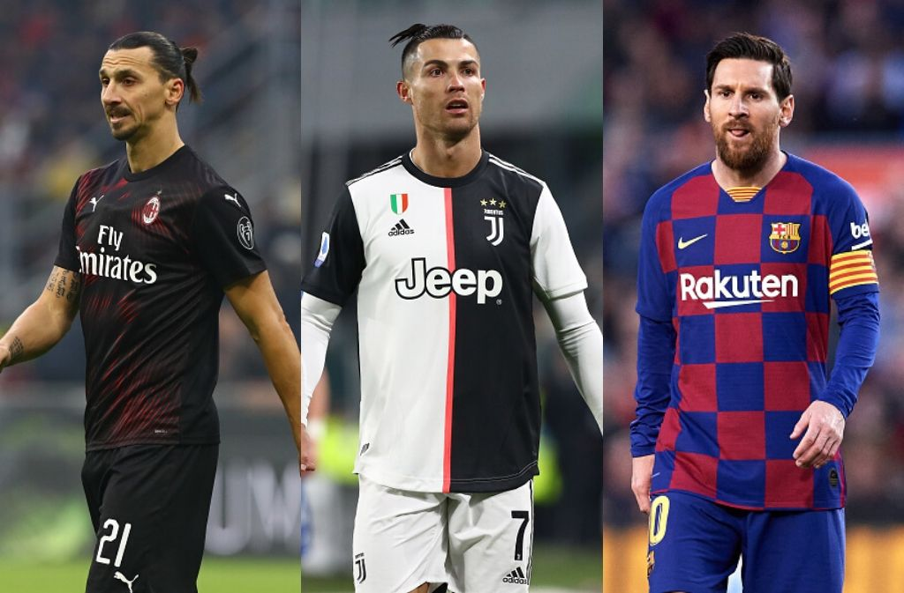

Books have the power to transport us to new worlds and different times, but they can also take us back to the important moments in our own lives.Books are the quietest and most constant of friends; they are the most accessible and wisest of counselors, and the most patient of teachers.One glance at a book and you hear the voice of another person, perhaps someone dead for 1,000 years. To read is to voyage through time.Fairy tales are more than true: not because they tell us that dragons exist, but because they tell us that dragons can be beaten.
football

I have to keep working hard and playing well because I don’t like to be second or third: they’re the worst places to be. You would be proud, of course, because it means you’re on the way, but you want to finish first.People in football love to talk about mental strength. Well, I’m the strongest dude you’re ever going to meet. Because I remember sitting in the dark with my brother and my mom, saying our prayers, and thinking, believing, knowing
… it’s [success] going to happen.All goalscorers go on droughts. It is how you cope with that. And it is not just about scoring, it is about what you bring to the team, bringing others into play and getting assists.Outside football, I just love life, you know. We’re lucky to play football, to have all this body. Everyone’s watching us. You see how many people, they come and watch the game. It’s unbelievable, you see how many people they come.
They shout your name and just enjoy life.It is a unique and special feeling when the fans sing my name. It’s incredible when I hear the song, and it’s touching that there are people who connect with you
fruits
I keep my diet simple by sticking to mostly fruits and vegetables all day and then having whatever I want for dinner. I end up making healthy choices, like sushi or grilled fish, because I feel so good from eating well.If your blood is formed from eating the foods I teach [fruits and green-leaf vegetables] your soul will shout for joy and triumph over all misery of life. For the first time you will feel a vibration of vitality through your body
(like a slight electric current) that shakes you delightfully.I love fresh fruit and vegetables. I'm not a strict dieter. I don't think that anything in life should be so regimented that you're not having fun or can't enjoy like everybody else. Just know that fresh food is always going to
be better for you.Right now I'd love to be sitting on a Greek island somewhere because of being Greek American, eating great octopus salad and some fantastic lamb. Or sipping a little ouzo. I think the Mediterranean diet is one of the healthiest...
Lots of nuts, vegetables, fruits, fresh fish, lean meats, yogurt.